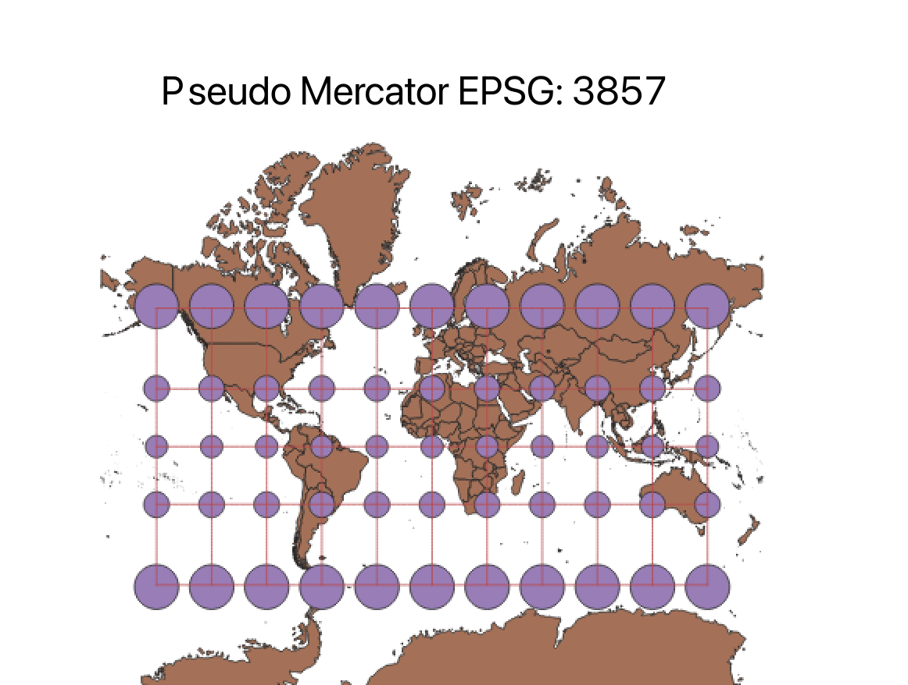

In this project I learned how to display images in different projections
Using QGIS, I was able to display multiple projections of the same map. This was accomplished by downloading the map data involved with this project into my computer. Using the indicatrix mapper plug-in I was able to transpose multiple projections onto my map. Exploring the different projections was interesting as it displayed how the same global map can change extreme amounts depending on how the information is presented. Over the course of this project I was able to enhance my skills involving projections and understanding how these projections influence perceptions of maps.
WGS84 Projection
The Mercator projection enlarges Europe relative to areas near the equator. Greenland in this projection is roughly the size of Africa which is not the case in the real world.

Aitoff Projection
In this projection the Earth is projected as more of an ellipsoid rather than a rectangle. There is high distortion nearing the edges of the map. A positive of this map is that distances through the center of the map are true.

Pseudo Mercator
The Pseudo Mercator is similar to WGS84 in the sense that it enlarges Europe disproportionally. The main difference is no elongated distortion near the poles of the map.
 -->
Sphere Winkel
In the Sphere Winkel projection the earth is represented as an ellipsoid. Shape is kept relatively constant with vertical stretching present near the poles.
Sphere Cylindrical Equal Area
The Sphere Cylindrical Equal Area projection presents equal vertical proportions throughout the map. Near the top and bottom of the map severe horizontal stretching occurs.
World Equidistant Conic
The World Equidistant Conic projection is in a circle and includes the entire landmass of the earth. Antartica wraps mostly around the entire map which is not realistic. This projection is highly distorted but I believe represents how the earth would look if you placed a piece of paper on top of the globe to draw all land.

North Pole Azimuthal Equidistant
This projection is very similar to the World Equidistant Conic. The main difference between the two is Antartica fully connecting around the map.
Sphere Bonne
The Sphere Bonne projection follows the shape of a heart. I found this projection interesting because I have never seen the Earth represented in this fashion. It appeared to be a fusion between the Sphere Winkel and the World Equidistant Conic.
World Craster Parabolic
The World Craster Parabolic was another representation of Earth that I have not seen before. It is stretched at the equator and at the poles.
Data used for this project
Download Natrual Earth 1:10m Cultural Vector